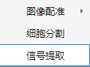
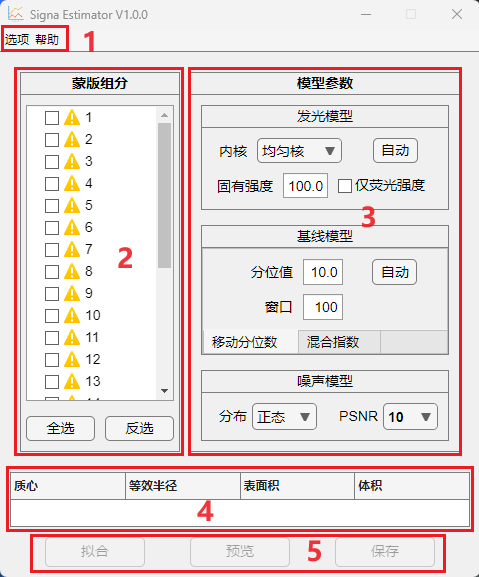
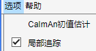
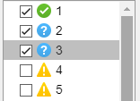
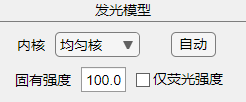
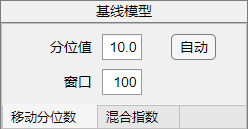
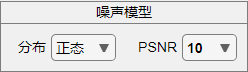
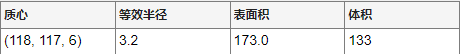
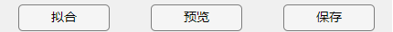

1.3.3 信号提取

信号提取器为独立子程序，面板包括五个主要区域，如下图所示：

区域1. 菜单栏，包括 选项 及 帮助。
区域2. 蒙版组分，勾选需要分析的蒙版组分。
区域3. 模型参数，调整模型参数用于计算蒙版内荧光强度变化。
区域4. 空间位置信息，点击蒙版组分，将显示其空间位置信息。
区域5. 控制按钮，拟合荧光强度变化模型，预览部分组分荧光强度变化曲线，或保存结果。
1. 菜单栏
1.1 选项

选项菜单包括两个可选项。当 CaImAn初值估计 勾选时，拟合模型及保存时将附带 CaImAn 估计荧光强度变化所需的初值。
当 局部追踪 勾选时，蒙版组分将对每一帧间采用 局部追踪 并微调以获得组分空间位置的最佳估计。(Version > 2.1.0)
1.2 帮助
无。2. 蒙版组分
蒙版组分 中将显示每个组分的标签。任意组分拟合前将显示 黄色三角 符号，拟合后将变为 绿色对勾 或 蓝色问号。蓝色问号代表在当前参数下，该组分无明显荧光强度变化；绿色对勾则代表至少出现一次显著的荧光强度变化。 
您可以双击标签字段修改标签，标枪将自动同步至主窗体。 3. 模型参数
发光模型 
内核 可选 均匀核 或 高斯核用于组分内荧光强度的加权平均, 均匀核代表每个像素权重相同，高斯核按高斯分布决定不同空间位置的像素权重。您可以使用 自动， 程序将根据组分体积自动确定。
固有强度 为相机背景强度(期望)。
仅荧光强度 该选项将仅计算荧光强度而非荧光强度相对变化。
基线模型 
您可以选择 移动分位数 或 混合指数 作为组分荧光的基线估计。移动分位数 法通过使用滑动窗口的P分位数作为窗口中心值对应基线的估计。相比于混合指数方法，滑动分位数的估计更加鲁棒。混合指数方法仅考虑荧光分子的自然衰减(指数模型：恒定衰减比例假设)，从数据中拟合基线。混合指数法需要假定基线荧光强度上限。
噪声模型 
您可以提供假定的噪声信息，程序将自动迭代确定分布参数，并迭代滤波器直至滤除该噪声（该过程所得可能并非全局最优解）。PSNR(峰值信噪比)规定活动强度阈值，当信号中存在超过阈值的部分，标记为显著活动序列。当假定噪声分布为 无 时，程序将不执行滤波，仅保留原始计算结果，此时任何组分的活动都被认为是显著的。4. 空间位置信息

空间位置信息即蒙版组分中选中项目的位置信息，单位为像素（体素）。5. 控制按钮

当您勾选部分组分时，拟合 将变为可用，拟合后您可以选择预览图像或保存数据。保存数据包括一个包含时间、组分标签及活动强度的EXCEL(.xlsx)文件。若您在选项菜单中勾选了CaImAn初值估计， 将同时导出包含CaImAn初值(A,C,b,f)的 .mat文件，该文件可以被Scipy(python package)读取并转化为python支持的数据类型。